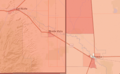

State Demography Office Tools and Maps
SDO Census API: Download American Community Survey 5-year data
Census 2020 Interactive Map
2020 Census Population Density Map

ACS Interactive Maps: 2006-2010 to 2017-2021
Historical Census Data Lookup, 1870 to 2020
Census 2020 Visualizations
2020 Demographic Profile Page
Census 2020 Demographic Profile Interactive Map
2020 Census Interactive Age Pyramids
2020 Census Interactive Maps by Age Group
American Community Survey Applications
U.S. Census Bureau Quick Facts; Summary tables based on U.S. Census data
ACS Data Profiles
U.S. Census Bureau ACS Data Portal: data.census.gov
ACS Table Shells: Documents showing the content and layout of ACS tables
ACS Table Ids Explained: Explanation of ACS Table Names and Subject Matter Codes
ACS Handbook: Documentation of the ACS showing how to combine estimates and MOE values
Census Academy: U.S. Census Bureau Training Hub
Census Survey Explorer: Access Census ACS, AHS, and Other Surveys
Census Reporter
Census My Community Explorer: An interactive tool that highlights demographic and socioeconomic data
Census SAIPE Viewer: An interactive tool showing Small Area Income and Poverty Estimates (SAIPE)
An interactive collection of maps that highlight various demographics and broadband internet availability and adoption by state.